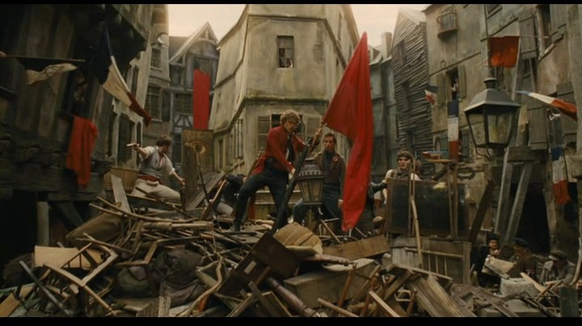
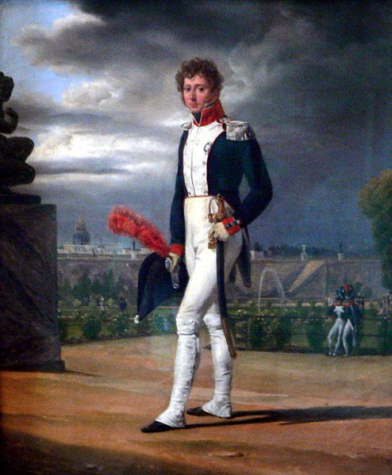
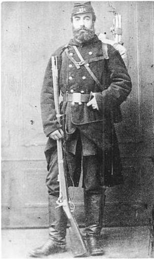
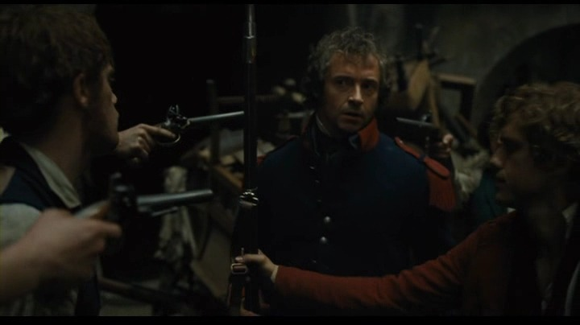
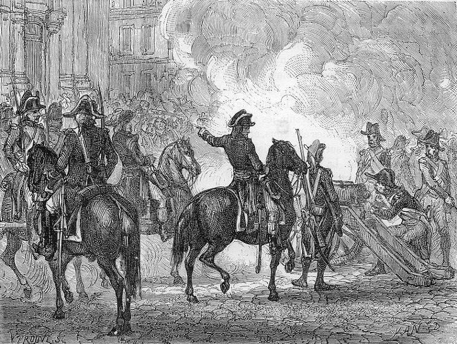
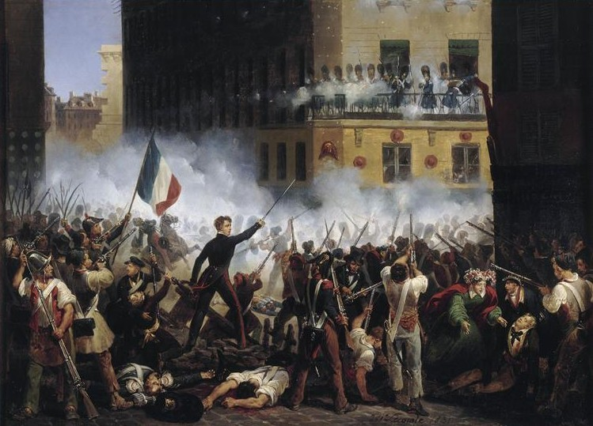
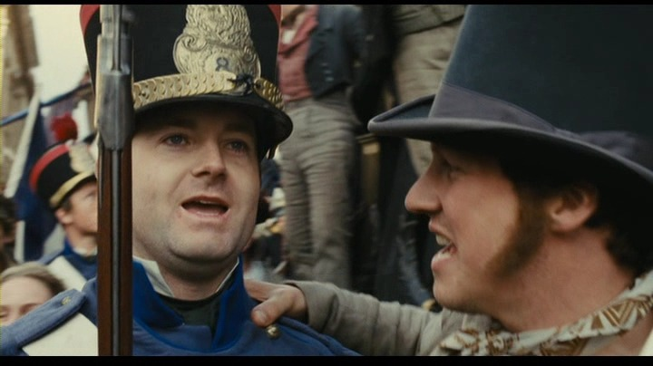
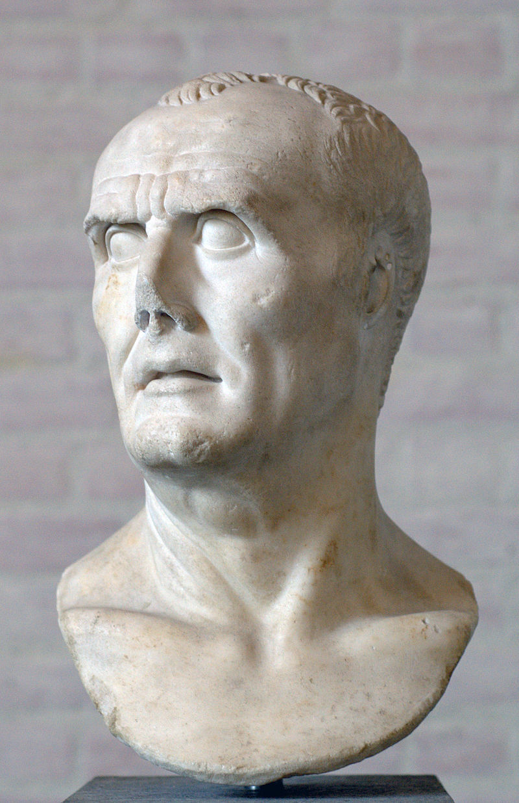

앙졸라와 싸운 자들은 누구인가 - 총기 규제와 국민방위군 이야기
게시: 2018-03-21T21:26:26+09:00
미국이 잦은 총기 난사 사건을 겪으면서도 총기 규제를 하지 않는 표면적인 이유 중 가장 큰 것이 바로 헌법 수정 제2조(The Second Amendment)입니다. 대개 이 조항이 미국 시민이 총기를 소유할 수 있는 불가침적인 권리에 대한 이론적 기반을 준다고 하지요. 그런데 최근 그런 해석은 틀린 것이며, 헌법 수정 제2조는 시민들에게 총기 소유 권리를 주는 것이 아니라는 주장이 실린 기사를 읽었습니다.
https://www.marketwatch.com/story/what-americas-gun-fanatics-wont-tell-you-2016-06-14
원래 수정 제2조는 아래와 같습니다.
"A well regulated Militia, being necessary to the security of a free State, the right of the people to keep and bear Arms, shall not be infringed."
(잘 정비된 민병대는 자유로운 주 정부의 안보에 필수적이므로, 인민이 무기를 소지하고 휴대할 권리는 침해될 수 없다.)
위 기사의 주장에 따르면, 헌법 수정 제2조에서 보장하는 것은 주 정부의 안보일 뿐 개인의 총기 소지가 아니며, 그 핵심은 연방 내에서의 각 주 정부의 안보를 지키기 위한 'well regulated Militia'라는 것입니다. 그리고 거기에 해당하는 현대적 조직인 National Guard가 이미 주 정부마다 유지되고 있으므로 개인의 총기 소지는 규제할 수 있다는 것이고요. 여기서 말하는 National Guard는 보통 주방위군이라고 번역되는데, 이는 예비군과는 또 다른 개념으로서 우리나라에는 없는 개념입니다. 미국의 National Guard는 대부분 따로 생업이 있으나 파트타임으로 급여를 받고 주방위군에서 복무하는, 일종의 민병대 병사들이니까요. 미국 주방위군의 경우 대부분은 민간 생업에 종사하지만 5년 복무 기간 중 1년은 현장에 배치되는 것이 원칙이라고 하더군요.
National Guard라고 불리는 이런 희한한 조직의 시초는 프랑스 대혁명 때 만들어진 'Garde Bourgeoise'(시민방위군)입니다. 이는 원래 국민을 탄압하는 국왕의 군대에 대항하여 시민들이 만든 무장 경비대로 탄생한 것이었는데, 곧 혁명과는 무관하게 다른 유럽 국가로도 전파됩니다. 국민 개병제에 의해 전례없이 대규모의 병력이 동원되던 나폴레옹 전쟁 동안 프랑스의 압도적인 병력에 고전하던 오스트리아 등 다른 유럽 국가들이 그 제도를 본떠 Landwehr 등의 이름으로 유사 조직을 만들었던 것입니다. 유럽에서의 National Guard는 국민방위군이라고 보통 번역하는데, 레미제라블 소설에도 나옵니다.

2012년 영화 레미제라블에서는 일부 생략된 부분입니다만, 흔히 'ABC Cafe'라고 불리는 노래에서 앙졸라가 친구들과 무장봉기를 모의하며 부르는 가사는 다음과 같습니다.
The time is near
So near it's stirring the blood in their veins!
때가 가까왔다
혈관 속에 피가 들끓을 정도야
And yet beware
Don't let the wine go to your brains!
하지만 신중해야해
아직 승리에 도취할 때는 아니지
For the army we fight is a dangerous foe
With the men and the arms that we never can match
우리가 싸울 군대는 위험한 적수야
그들의 병력과 무기는 우리가 상대할 수조차 없어
It is easy to sit here and swat 'em like flies
But the national guard will be harder to catch.
여기 앉아서 말로만 그들을 파리처럼 때려잡는 건 쉽지
하지만 '국민방위군'은 파리보다는 잡기 어려워
We need a sign
To rally the people
To call them to arms
To bring them in line!
우리에겐 필요해
민중들을 모을,
그들이 무기를 들고 일어설,
그들을 규합할 신호가 !
(Red & Black 바로 전에 나오는 장면입니다.)
이 노래 가사를 들어보면, 앙졸라와 그의 친구들이 무력으로 맞싸울 상대는 경찰도 프랑스 육군도 아닌 '국민방위군'라는 존재입니다. 대체 국민방위군이라는 것은 어떤 군대였을까요 ?
영화 레미제라블을 보면 장발장이 마리우스와 앙졸라가 있는 바리케이드로 찾아갈 때, 길바닥에 쓰러진 정부군 병사의 옷을 벗겨 그 옷을 입고 정부군의 포위망을 뚫고 가는 것으로 나옵니다. 하지만 원작 소설에서는 약간 다르게 나옵니다. 즉, 원래 장발장이 '국민방위군' (la Garde Nationale, National Guard) 소속인 관계로, 집에 있던 자기 군복을 입고 자기 소총을 들고 바리케이드로 찾아가는 것으로 나오지요. 또 당시 나이가 60대였고 도망자 신분이라서 주민등록번호도 없었을 장발장이 국민방위군 소속이라는 것이 가능했을까요 ? 이건 빅토르 위고가 설정상의 실수를 한 것 아닐까요 ?
결론부터 이야기하면 예, 아니었습니다. 프랑스 대혁명이 발발한 이후, 외국과의 전쟁을 위해 1798년 징집제를 실시한 것이 근대 유럽 사회에서 최초의 징집제였습니다. 물론 예나 지금이나 젊은이들은 군 입대를 좋아하지 않았습니다. 그래서 앞니를 뽑는 등 온갖 방법을 다써서 군대를 빠지려고 했지요. 당시 머스켓 소총을 장전할 때는 종이 탄약포를 앞니로 물어 뜯어야 했으므로 앞니가 없으면 병사 노릇을 할 수 없기 때문이었습니다. 나폴레옹이 유럽을 정복할 수 있었던 것도 이런 징집제가 바탕이 되었던 것입니다. 하지만 부르봉 왕가가 복위한 이후 전쟁이 없으니 자연스럽게 징집제는 철폐되었고, 다시 혁명전처럼 모병제에 의한 지원병들 그리고 스위스 및 독일 용병들로 군대를 채웠습니다. 그래서 마리우스나 앙졸라 등 당시 프랑스 젊은이들은 군대에 가지 않아도 되었습니다.
당시 그런 정규군 사단은 시내, 특히 파리 시내에 주둔하는 일이 없었습니다. 어차피 군대라는 것은 외국군에 맞서기 위한 것이니까 국경 부근에 주둔하는 것이 정상이었습니다. 파리 시내에는 주로 외국 용병들로 이루어진 왕실 근위대 정도만 있었지요. 하지만 파리 등 주요 도시에서도 경찰력만으로는 감당이 안되는 사태가 발생할 수 있었습니다. 대표적인 것이 바로 폭동과 혁명이었지요. 그런 사태를 대비하여 만들어진 것이 바로 국민방위군이라는 것이었습니다.
국민방위군이란 일종의 예비군 같은 것으로서, 평소에는 민간인 생활을 하다가 폭동이나 내란 같은 비상 사태에 소집되어 질서를 유지시키고 지역을 방위하는 군대였습니다. 원래는 1789년의 프랑스 대혁명 때의 무질서를 제어하기 위해, 주로 중산층 시민들이 자원병으로 나서서 결성된 조직이었습니다. 민병대와는 달리 제대로 된 군복도 갖추었기 때문에 모르는 사람들이 겉으로 봐서는 정규군과 크게 구분되지 않는 군대였지요. 이런 국민방위군에도 장교들이 있었는데, 이들은 국왕이나 시장에 의해 임관되는 것이 아니라 동료 방위대원에 의해 선출되었습니다. 이런 국민방위군은 평상시 해당 지역의 방위에만 활용되었고 또 평상시 집에서 먹고 자고 생업에 종사했습니다. 주로 하는 일은 순번을 정하여 시청 등 공공 건물에서 경비를 서는 일이었습니다. 왜 중산층들만 이 조직에 끼워주었냐고요 ? 원래 하층민들은 사실 지킬 것이 별로 없는 사람들입니다. 중산층 이상되는 양반들만 사실 지켜야 할 재산이 있으므로 스스로 총을 들 필요가 있는 것이지요. 게다가 또 중산층 이상만 끼워줄 중요한 이유가 있었습니다. 이들은 총과 군복도 자비로 마련했기 때문에, 애초에 재산이 어느 정도 있지 않으면 참가 자체가 불가능했습니다. 또 그렇게 자비로 마련한 소총이다보니, 평소 그 보관도 무기고가 아니라 각자 자기 집에 보관했습니다. 이 점이 나중에 격동기 프랑스 정치에 큰 영향을 미칩니다.


(위는 레미제라블 당시 인물인 르느와르 (Philippe Lenoir, 1785-1867, 그 유명한 르느와르 아님)라는 화가의 국민방위군복을 입은 모습입니다. 아래는 1870년 당시의 국민방위군의 모습입니다.)
이미 노년이었던 장발장이 국민방위군에 들어가게 된 사연도 레미제라블 원작 소설 본문에 나와 있습니다. 1831년 파리에서 인구 조사를 실시했는데, 플뤼메(Plumet) 거리에 살고 있던 장발장도 거기에는 응해야 했던 것입니다. 장발장은 이때 이미 60세가 넘었으므로 법적으로 면제될 수 있었으나, 장발장은 나이를 50대로 속이고 국민방위군의 소집에 일부러 자원합니다. 국민방위군 소속이라는 것은 건실한 중산층 시민이라는 반증이 되는 것이었거든요. 그 댓가로는 1년에 3~4번 소집되어 시청에서 보초를 서는 것이었으니 도망자 신분으로서 최대한 자신을 일반인으로 꾸며야 했던 장발장으로서는 남는 장사였던 것입니다. 그러니 앙졸라가 무장 봉기를 일으켰을 때, 장발장은 국민방위군 소집령에 응하여 그를 진압하러 가야 했습니다. 물론 이때는 테나르디에의 습격을 경찰로 오인한 장발장이 이미 플뤼메 거리의 집을 버리고 도망친 상태였기 때문에 그에게는 소집 영장이 닿지 않았겠지요.

(이보게 친구들, 진정하게. 영화와는 달리 사실 이거 내 군복에 내 총이라네. 훔친 것이 아니라네.)
프랑스 정규군의 주력 부대는 대부분 지방에 주둔했기 때문에, 루이 필립 시대에 잦았던 폭동과 무장 봉기를 진압하는 것은 주로 이 국민방위군의 몫이었습니다. 위에서도 말했듯이 그 구성원들의 출신 때문에라도, 국민방위군은 서민들의 편이라기보다는 주로 중산층 시민 계급(부르조아)의 편이었습니다. 가령 1793년, 총재 정부가 선거법을 교묘히 조작하여 자신들의 권력을 굳히려 하자, 1795년 10월 5일, 약 3만명에 달하는 파리 시내의 국민방위군은 이에 반발하여 입헌군주제를 지지하는 왕당파 편으로 돌아섭니다. 이때 파리 시내에서 총재 정부를 지지하는 정규군 병력은 고작 5천에 불과했습니다. 이 6대1의 불리함을 간단히 극복하고 국민방위군을 포병대로 산산조각낸 불세출의 영웅이 바로 나폴레옹 보나파르트였지요.

(미친개에게는 몽둥이를 ! 반란군들에게는 대포알을 ! 보나파르트 장군에게 자비란 없습니다.)
나폴레옹과 국민방위군의 관계는 이렇게 시작부터 좋지가 않았습니다. 당연히 나폴레옹은 국민방위군을 믿지 않았지요. 나중에 1809년과 1814년에 잠깐 소집했을 뿐이었습니다. 그러나 부르봉 왕가가 복위하면서 징집제를 폐지한 뒤에는 부족한 병력을 보완하기 위해 이 국민방위군 제도가 재활성화되었습니다. 하지만 부르봉 왕가의 정치가 점점 '절대 왕정'으로 퇴보하는 방향으로 향하자, 부르조아 시민층의 왕정에 대한 감정이 악화되었고, 이런 움직임은 샤를 10세로 하여금 국민방위군이 유사시 왕정에 대한 강력한 위협이 될 수 있겠다는 생각을 갖게 했습니다. 그래서 1827년, 샤를 10세는 국민방위군을 해체시켜 버립니다. 하지만 이때 샤를 10세는 실수를 하나 저지릅니다. 국민방위군 조직만 해체했을 뿐 국민방위군이 가지고 있던 무기류는 압수하지 않았던 것입니다. 실은 압수할 근거가 없었던 것이, 그 소총과 탄약 등은 국가에서 지급한 정부 자산이 아니라 중산층 출신인 국민방위군 병사 개인이 사비로 구입한 사유물이었던 것이지요. 결국 불과 3년 뒤 터져나온 1830년 7월 혁명에서, 거리로 뛰어나온 수많은 부르조아 시민들의 손에는 국민방위군 시절 사용하던 머스켓 소총이 들려 있었던 것입니다.

(1830년 7월 혁명 당시 전투 모습입니다. "여기가 미국도 아닌데 민간인들에게 왜 이렇게 총이 많은거냐 ?")
1830년 7월 혁명 이후 세워진 오를레앙 가문의 루이 필립 1세는 그러니까 사실 온건한 입헌 군주제를 원했던 부르조아 시민들이 세운 왕이었습니다. 따라서 앙졸라가 이끄는 'ABC의 벗들', 즉 과격 공화파가 일으킨 1832년 6월 봉기는 부르조아 시민들이 그다지 원하지 않는 사건이었고, 따라서 국민방위군은 이 봉기를 적극적으로 진압했습니다. 그러다가 결국 루이 필립의 정치가 점점 도시 부르조아 시민들의 이익에서 멀어지게 되자, 결국 터져나온 1848년 2월 혁명 때는 국민방위군은 혁명을 지지했던 것입니다. 결과적으로 이 19세기 초반 혁명의 시대에는 국민방위군의 민심이 프랑스의 왕권을 좌지우지하는 경우가 많았습니다.

(이렇게 병사들이 진압은 안하고 'Do you hear people sing' 노래를 부르면서 시위대와 함께 행진하면 독재자에게는 큰일 나는 거에요. 루마니아 독재자 차우셰스쿠도 그렇게 죽었지요.)
제 지난 글을 읽어보시면 아시겠습니다만, 저는 항상 모병제보다는 징집제를 지지하는 편입니다. (다만 현재의 노예같은 군대 생활은 결사 반대입니다. 징집된 군인들의 생활 환경과 급료는 미군 수준까지는 아닐지라도, 지금보다는 대폭 향상되어야 합니다.) 그 주된 이유는 제가 진보 좌익인 척 하는 보수 우익이기 때문입니다. 군대는 반드시 국민 대다수와 이해 관계가 같아야 합니다. 스파르타나 로마가 강했던 것은 소규모 자작농이 곧 정규군이었기 때문이었습니다. 스파르타의 사회주의적 경제체계가 무너지고 그에 따라 스파르타 시민들이 부자와 빈민으로 나뉘게 되면서, 또 로마 공화정의 군대가 마리우스나 술라, 케사르나 폼페이우스 개인을 따르는 직업 군대로 변모하면서부터 그 몰락이 시작되었던 것입니다.

(로마의 군단병들은 원래 자작농들로 구성된 시민병들이었습니다. 그러나 점차 직업 군인화되면서 특정 장군을 따르는 사병화되는데, 그런 변질의 시초는 일반적으로 킴브리족을 격파한 가이우스 마리우스의 군사 개혁이었습니다.)
당장은 더 훈련이 잘되어 있고 더 전문적인 전투원으로 구성된 모병제가 더 효율적이고 더 강할지도 모릅니다. 하지만 모병제는 필연적으로 그 사회 중산층과 군대의 사이를 벌어지게 합니다. 중산층 출신 자제 중에서 군대로 가는 비율은 매우, 매우 적은 것이 정상이니까요. 그리고 그런 점은 그 사회의 정치 안정성을 크게 떨어지게 합니다. 지켜야 할 것이 별로 없는 사람들로 국가의 안보를 책임지게 하는 것이 그다지 현명한 일 같지는 않거든요. 미국이나 유럽처럼 민주주의 제도가 확고히 자리잡은 나라에서는 어떨런지 모르겠습니다. 하지만 박통에 의한 쿠데타나 전땅크에 의한 쿠데타가 그리 오랜 옛날 이야기가 아닌 사회, 그리고 광주사태가 아직도 북괴의 공작에 의한 무장 반란 사건이라는 이야기가 공공연하게 떠벌여질 정도로 성숙하지 않은 사회에서는 모병제는 아직 무리라고 생각합니다. 그런 점에서 현재의 대한민국처럼 사회 지도자 계층에서 군대 제대로 마치고 온 아들 찾기가 매우 어려운 현실은 정말 우려스럽습니다. 그런 거 보면 진짜 우리나라에는 보수는 거의 없어요. 그저 한치 앞도 내다보지 못하는 욕심꾸러기들을 사회 지도층으로 모시고 사는 것 같습니다.
(길거리에 젊은이들이 뛰쳐나오는 것이 문제라고요 ? 아닙니다. 그들이 뛰쳐나오도록 만든 사회 지도층이 문제라고 생각해요. 그런데 요즘처럼 노인분들이 이스라엘 깃발을 들고 거리로 나오는 것을 보니 측은하기도 하고... 기분이 묘하네요.)